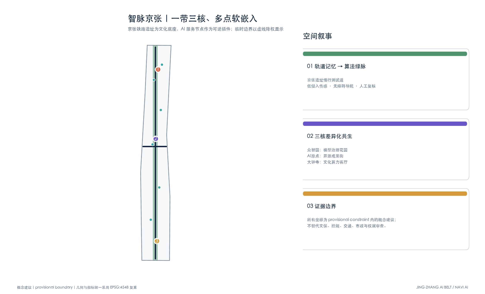
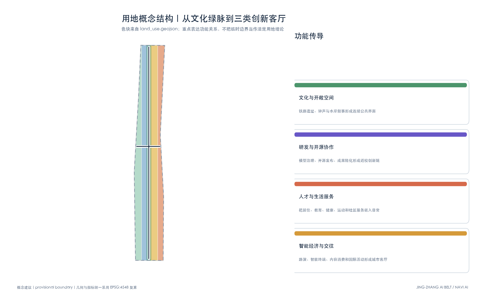
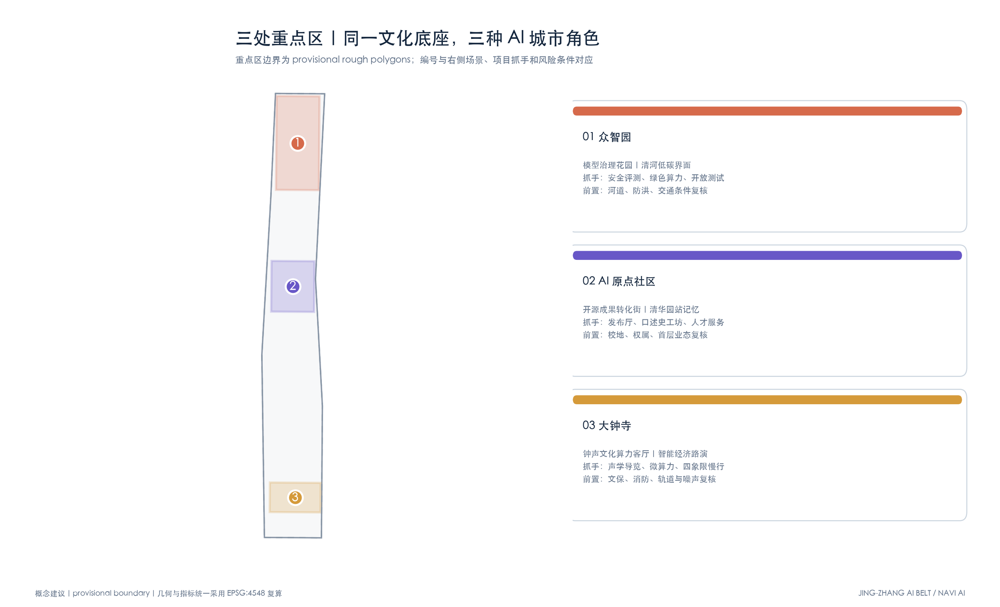
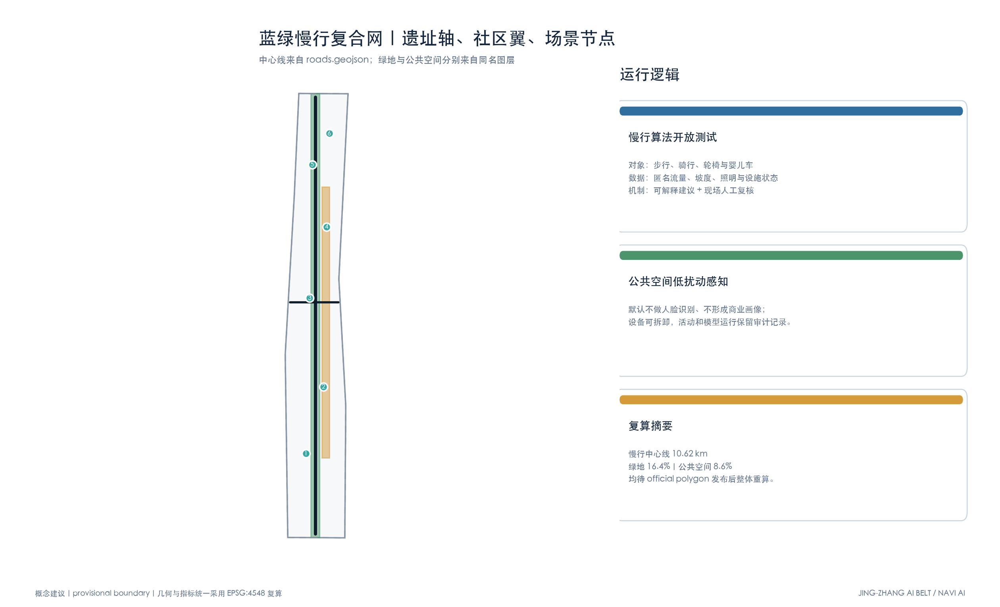
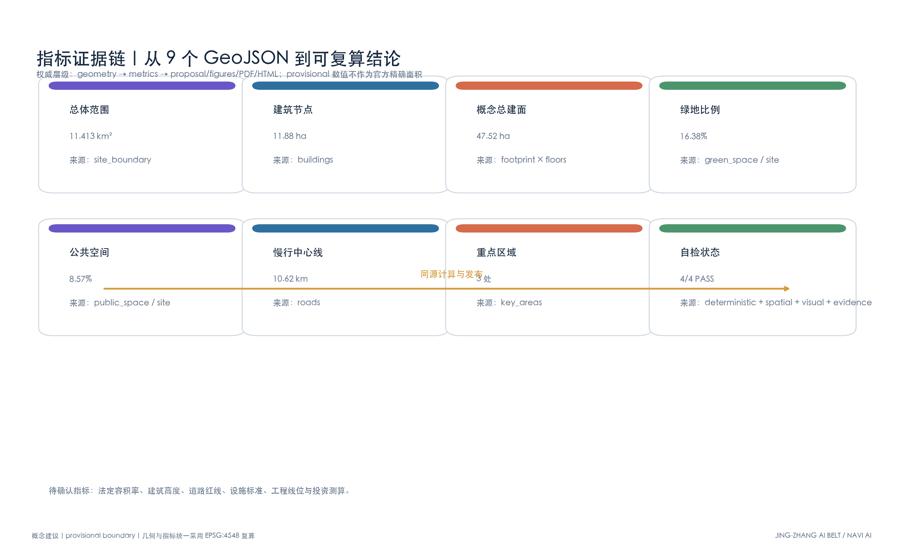

智脉京张 AI 创新带概念方案
以「历史人文×AI交织」为总主题的京张智脉共生带概念方案：京张铁路遗址、大钟寺、清河等历史人文资产作为城市底座，AI全栈创新、开源社区、智能场景作为软性插件嵌入既有肌理，形成软嵌入而非推倒重建的城市更新路径；全部结论以概念建议表述，指标由 provisional boundary 派生图层复算。
智脉京张 AI 创新带概念方案
方案主张：让历史做底座，让 AI 做可替换的城市插件
本方案是一套面向后续讨论和专业校准的概念建议，而不是法定规划结论。它不把京张铁路遗址、大钟寺历史环境和既有社区当成等待清空的“旧场地”，也不以孤立的未来地标制造科技感。空间策略是“留住时间的纹理，再嵌入可迭代的新服务”：铁轨、站场、钟声意象、老厂房尺度、树阵和居民日常路径构成稳定底座；微型算力、开源测试、无障碍导航、数字讲述与创新社群采用轻量、可逆、可评估的方式进入。涉及文保、权属、交通、市政和开发强度的内容，均待相应资料和专业程序确认。
总体形成“一条遗址算法绿脉、三个历史—AI共生客厅、两类社区连接翼”的概念结构。一条绿脉沿京张铁路遗址组织连续步行和骑行体验；三个客厅分别落在众智园、北京 AI 原点社区和大钟寺周边；两类连接翼一类通向高校与研发园区，一类通向居民社区与轨道站点。AI 不接管空间，而是帮助发现断点、解释历史、测试服务，并把运行证据交给人工复核。传感设施遵循最小采集原则，默认处理匿名或聚合数据，不做人脸识别，不形成个人商业画像。
场景卡 A｜京张铁轨 AI 慢行开源测试道
**历史底座**：保留铁路遗址的线性方向、轨枕节奏和站场记忆，以材料色带和可触摸标识讲述京张铁路工程史。**AI 插件**：在不干扰遗存的点位布置可拆卸边缘设备，面向轮椅、婴儿车、骑行者和步行者测试坡度提醒、拥挤提示、无障碍绕行及夜间照明响应。设备只记录经过脱敏的流量、环境和设施状态；路线建议明确显示依据和置信度，异常情况由现场运营人员复核。**空间落位**：对应 [data:geometry/roads.geojson#ROAD-001] 与 [data:geometry/green_space.geojson#GREEN-001]。**评估方式**：用断点修复率、无障碍绕行距离、误报率和人工投诉闭环衡量，而不是追求采集规模。
场景卡 B｜大钟寺文化广场地下隐形算力微中心
**历史底座**：地面延续大钟寺周边安静、开敞、可停留的文化广场气质，用钟声波纹铺装、低位展陈和季节性活动解释区域文化，不制造压过历史主体的巨大屏幕。**AI 插件**：结合既有或后续可行的地下设备空间，提出模块化微型算力与热回收概念，为公共导览、文化数字化和周边小团队提供预约式边缘计算；设备出入口、散热、噪声、消防和能耗须经专项论证。**空间落位**：对应 [data:geometry/public_space.geojson#PUBLIC-001] 及大钟寺重点区 [data:geometry/key_areas.geojson#PROV-KEY-003]。**治理边界**：不承诺具体建设规模或投资来源，算力作业留存审计记录，文化内容由策展与历史研究人员复核。
场景卡 C｜清华园站记忆与开源极客社区
**历史底座**：以清华园火车站及沿线历史叙事为入口，将老建筑尺度、站牌语言和铁路旅行故事融入可步行的成果转化街。**AI 插件**：把首层闲置或低效空间改造建议为开源协作桌、模型安全评测间、口述史数字化工坊和小型发布厅；团队可用本地模型帮助整理公开档案与授权口述资料，但人物、年代和事件均需人工校勘后发布。**空间落位**：依托北京 AI 原点社区 [data:geometry/key_areas.geojson#PROV-KEY-002] 与软嵌入建筑节点 [data:geometry/buildings.geojson#BLDG-001]。**运营方式**：由场地运营方、社区代表、高校社团和文化顾问共同制定活动规则，先以短期展陈和周末工作坊验证，再决定是否延续。
场景卡 D｜众智园低碳模型治理花园
**历史底座**：延续清河水岸、既有树阵和工业研发街区的朴素空间气质。**AI 插件**：把模型能耗、碳排估算、偏差测试和红队评测转译为可阅读的花园展项，测试团队只展示经过审核的聚合结果；雨洪花园与遮阴空间同时服务居民、研发人员和访客。**空间落位**：对应众智园 [data:geometry/key_areas.geojson#PROV-KEY-001] 和连续绿带。它既是企业交流界面，也是公众理解“负责任 AI”的小型课堂。
上述四张核心卡与后文十类应用场景共同构成可迭代清单。所有空间坐标均由生成脚本读取临时边界后裁剪派生；面积、长度和概念强度由投影几何自动复算。临时边界只支持方案比较和技术自检，正式边界发布后应整套重跑，避免局部替换造成指标失真。
设计依据与资料清单
本 formal 方案以北京市规划和自然资源委员会海淀分局发布的《百年京张AI创新带城市设计国际方案征集资格预审公告》为第一依据，并以 brief/site-package/ 中经维护者登记的临时粗略边界、重点区域、枚举、指标和来源清单为机器可读依据。AI agent 在生成方案前必须读取 design_brief.json、allowed_design_space.json、sources.json、enums/、ranges/、schemas/、data/source_registry.json 和 data/processed/agent_fact_pack.md，并用 project_scope_summary.csv、agent_task_requirements.csv、source_use_matrix.csv、missing_data_checklist.csv 建立任务、范围、资料用途和缺口清单。所有设计判断都要拆分为可追溯来源、可复算指标、可校验图层和可人工复核假设。公告要求方案达到控制性详细规划的城市设计深度和规划综合实施方案的城市设计深度，因此文本叙述不能替代 GeoJSON、指标表、A3 文册、A0 展板和 HTML 电子展示成果。
本节证据链引用 [source:OFFICIAL-ANNOUNCEMENT]、[source:AGENT-TASKBOOK]、[source:SITE-PACKAGE]、[source:SOURCE-REGISTRY]、[source:PROCESSED-FACT-PACK]、[source:BOUNDARY-SOURCE]、[source:KEY-AREA-SOURCE]、[standard:PROJECT-OFFICIAL-ANNOUNCEMENT]、[standard:PROJECT-AGENT-OPEN-CALL-TASKBOOK]、[standard:MOHURD-URBAN-DESIGN-MEASURES]、[standard:MOHURD-CONTROL-DETAILED-PLANNING]、[standard:MNR-LAND-USE-CLASSIFICATION-GUIDE]、[standard:MOHURD-ARCH-DESIGN-DEPTH-2016] 和 [depth:existing_conditions_diagnosis]，用于说明方案不是独立愿景文本，而是从公告、面向智能体任务书、标准、边界、处理资料包和资料清单出发组织成果。
资料登记表的使用边界如下：
- data/source_registry.json 登记公开、清权与临时资料的用途边界。
- 当前登记摘要：formal 可用资料 5 条，背景资料 0 条，provisional-only 资料 1 条。
- agent 不得把 background_only 或 provisional_only 资料升级为 official boundary、法定控规、正式评分依据或政府实施承诺。
data/processed/agent_fact_pack.md 是本方案的阅读导航层，不是新的权威来源。[source:PROCESSED-FACT-PACK] 只帮助 agent 把三层范围、三处重点区、公告任务、agent.1-agent.6、资料可用性和缺资料事项组织成可读方案；所有事实判断仍回到 [source:OFFICIAL-ANNOUNCEMENT]、[source:AGENT-TASKBOOK]、[source:SOURCE-REGISTRY]、[source:BOUNDARY-SOURCE] 与 [source:KEY-AREA-SOURCE]。

图示来源：[source:FIGURE-OVERVIEW]，由提交包内 GeoJSON 与来源登记表派生绘制。
本脚手架在官方 SITE_BOUNDARY 或三处 KEY_AREA 尚未取得时，使用 brief/site-package/geometry/provisional_boundaries.geojson 生成临时 formal 包。提交包中的 geometry/site_boundary.geojson 与 geometry/key_areas.geojson 均必须标注为 provisional_constraint、official_boundary=false，只能用于方案生成、自检、可视化和设计讨论，不能作为 official redline、审批依据、精确面积依据或法定控制结论。该组织方数据缺口本身不阻断内容评分；替换 official polygons 后，site boundary、key areas、land use、roads、green space、public space、buildings、phasing 和 metrics 均需重算。
本次脚手架生成的可评分状态为：**临时边界，保留精度警示并待正式数据发布后复算；不阻断内容评分**。因此，正文中的空间结构、场景、项目和指标均按“可讨论、可复核、可替换官方边界后重算”的原则写入；当官方边界和重点区 polygon 更新后，agent 必须重新运行脚手架、自检和图纸/HTML生成，不能只替换单个文件。
边界和重点区域的可读解释对应 [data:geometry/site_boundary.geojson#SITE-001]、[data:geometry/key_areas.geojson#PROV-KEY-001] 和 [metric:site_area_sqm]、[metric:key_area_count]。这意味着读者可以从正文回到 GeoJSON 查看边界来源、从 metrics 查看面积复算结果、从 sources 查看资料来源，而不是只相信一段文字判断。
三层范围工作框架
方案按照公告确定的三个层次组织工作：统筹研究范围关注 43.6 平方公里的AI产业生态、战略定位、创新链和未来城市形态；总体设计范围关注 11.4 平方公里京张遗址公园周边 1-2 公里城市地区和产业区，要求形成城市更新总体框架、产业空间布局、交通市政支撑和城市风貌控制；重点区域范围关注 368.4 公顷三处详细设计地区，要求明确功能业态、建筑规模、拆改留分类、公共空间连通和交通组织。三层范围在 compliance_matrix.json 中逐条映射，保证公告 1.3、1.4、1.5 与 agent.1-agent.6 的必选任务都有章节、图层、指标、图纸和 HTML 证据。
三层工作框架的深度项由 [depth:three_level_scope_framework] 和 [depth:overall_spatial_structure] 约束，空间证据以 [data:geometry/site_boundary.geojson#SITE-001] 与 [data:geometry/key_areas.geojson#PROV-KEY-001] 为准，任务依据以 [standard:PROJECT-OFFICIAL-ANNOUNCEMENT] 为准，范围索引以 [source:PROCESSED-FACT-PACK] 中 project_scope_summary.csv 的三层范围表为导航。

图示来源：[source:FIGURE-LAND-USE]，由 [data:geometry/land_use.geojson#LU-001] 与 [data:geometry/site_boundary.geojson#SITE-001] 派生绘制。
三层工作不是互相割裂的图纸集合。统筹研究决定产业链和城市形态判断，总体设计把判断落实到更新项目、空间结构和设施承载，重点区域详细设计验证具体地块、建筑、交通、公共空间和AI应用场景的可实施性。agent 生成方案时必须先锁定当前提交采用的 official 或 provisional 边界和约束，再生成用地、建筑、道路、绿地、公共空间、分期和AI服务节点，最后从这些图层复算指标并在正文解释哪些结论仍受 provisional boundary 限制。任何无法从结构化数据复算的面积、比例、规模或项目数量，不得写入正式结论。
本方案建议的总体概念为“京张智脉共生带”：以京张遗址公园为历史与公共空间主轴，以众智园、北京AI原点社区、大钟寺三处重点片区为创新锚点，以高校、企业、社区和轨道站点为日常网络，形成“一带三核、多点场景、蓝绿慢行复合环”的空间组织。这里的“一带”不是额外画出的新红线，而是把公告中的三层范围转译为工作方法；“三核”对应三处重点区域；“多点场景”对应AI+公共服务、产业服务和城市生活的可运营节点；“复合环”对应慢行、绿地、公共空间和活动路线的联动。
| 层级 | 设计问题 | 方案回答 | 数据落点 | | --- | --- | --- | --- | | 统筹研究范围 | AI产业生态和未来城市形态如何组织 | 建立“高校策源-开源协作-企业转化-公共体验-国际传播”的创新链 | compliance_matrix.json、standard_matrix.json | | 总体设计范围 | 产业空间、城市更新、交通市政和风貌如何落图 | 用地、建筑、道路、绿地、公共空间和分期图层共同表达 | [data:geometry/land_use.geojson#LU-001]、[data:geometry/roads.geojson#ROAD-001] | | 重点区域范围 | 三处片区如何达到详细设计深度 | 分别提出定位、空间动作、AI场景和实施依赖 | [data:geometry/key_areas.geojson#PROV-KEY-001]、[data:geometry/key_areas.geojson#PROV-KEY-002]、[data:geometry/key_areas.geojson#PROV-KEY-003] |
统筹研究范围产业与未来城市研究
统筹研究采用 **“The Track of Intelligence / 京张智脉共生带”** 作为中英文命名建议：Track 同时指铁路轨迹、技术演进轨迹与开放贡献记录。视觉识别建议从站牌横线、钟鼎弧线和清河水波抽取“一横、一弧、一涟漪”三种基本构件；主色使用铁路深蓝、遗址暖金和生态青绿。该识别系统用于导视、活动和数字界面参考，不替代任何官方品牌。五大功能被转译为“策源研发、开源协作、成果转化、公共体验、国际传播”，并通过“三区两翼”组织：众智园、AI原点、大钟寺构成三核，中关村科技服务翼与小月河场景赋能翼负责向高校、企业和社区连接。[source:AGENT-TASKBOOK] [standard:PROJECT-AGENT-OPEN-CALL-TASKBOOK]
统筹研究并不新增伪精确红线；它通过 [standard:MOHURD-URBAN-DESIGN-MEASURES] 要求的城市风貌、公共空间和建筑布局统筹，回接 [data:geometry/land_use.geojson#LU-001]、[data:geometry/public_space.geojson#PUBLIC-001] 与 [depth:overall_spatial_structure]，说明产业策略最终要落到可见、可复核的空间结构。
六个全球案例作为“机制库”而非照搬对象：多伦多 Vector Institute 提供“研究机构—企业伙伴—人才培养”的协作启示；巴黎 Station F 提供大体量既有建筑容纳多层次创业服务的运营启示；蒙特利尔 Mila 强调负责任 AI 与城市社区并置；伦敦 Knowledge Quarter 展示高校、博物馆与产业沿步行网络协同；新加坡 one-north 展示研发、居住和公共空间的紧凑混合；首尔数字媒体城展示内容产业、公共体验和交通门户的复合。可转化机制分别落为共同评测平台、共享发布厅、伦理治理工坊、文化机构合作路线、人才生活服务和智能内容消费界面；案例只支持方法比较，不作为本地规模或政策依据。
三处“AI 朝圣与荣誉节点”形成公共贡献可见性：清华园站旁设置“开源贡献站牌”，按授权展示长期维护者与公共项目；众智园设置“负责任 AI 评测花园”，展示经审核的安全、能耗和无障碍成果；大钟寺设置“时间与智能回声厅”，把清权钟声资料、铁路时间和模型演进做成可核验的策展界面。三者均为可供专业团队深化的概念建议，不对遗产本体和现状建筑作工程结论。
总体设计范围城市更新与控规深度城市设计
总体设计采用“一带三核、多点软嵌入、蓝绿慢行复合网”。一带是京张遗址文化—算法绿脉；三核是众智园模型治理花园、AI原点开源成果街和大钟寺文化算力客厅；多点包括发布厅、算力驿站、口述史工坊、数据要素会客厅和社区服务入口。geometry/land_use.geojson 以共享边界覆盖全部临时范围，geometry/buildings.geojson 只表达可逆软嵌入节点而非现状建筑普查，geometry/roads.geojson 表达概念慢行联系，因此本方案把由六个节点推得的强度明确命名为“概念节点强度”，不把它冒充总体法定容积率。[depth:overall_spatial_structure] [depth:development_intensity_controls]
本节按照 [standard:MOHURD-CONTROL-DETAILED-PLANNING] 把控规深度内容拆成可审查对象：[data:geometry/land_use.geojson#LU-001] 表达用地结构，[data:geometry/buildings.geojson#BLDG-001] 表达建筑基底，[data:geometry/roads.geojson#ROAD-001] 表达交通组织，[metric:building_footprint_area_sqm] 用于复核建筑基底面积，[depth:land_use_layout] 与 [depth:development_intensity_controls] 约束成果深度。
交通与设施采用“遗址纵轴 + 社区横翼 + 三核接驳”的参考结构：纵轴服务步行、骑行和无障碍测试；横翼连接高校、园区、社区和轨道门户；算力驿站只在具备电力、散热、消防和运维条件的既有或可利用设备空间中深化。停车、非机动车停放、道路红线、建筑高度、退线和服务半径均列入待确认条件，图层中的中心线及宽度仅用于概念面积复算。[depth:traffic_rail_slow_parking] [depth:municipal_new_infrastructure]
重点区域详细设计
三处重点区采用同一套“功能—建筑—交通—公共空间—项目—风险”框架。众智园以模型安全、绿色算力和全栈协作为产业功能，建筑建议采用首层开放、屋顶能源展示和小体量连廊，清河界面形成雨洪花园与慢行环；近期抓手是模型治理工坊和低碳评测花园，前置条件为河道、防洪和对外交通复核。AI原点以近校孵化、开源发布和人才服务为功能，优先讨论既有建筑首层共享与短租工作间，通过清华园站记忆线连接校区、园区和轨道站；近期抓手是开源发布厅与口述史工坊，前置条件为权属、校地接口和消防复核。大钟寺以智能体、智能终端、内容消费和国际路演为功能，公共空间建议采用低位展陈与可拆卸设施，研究大钟寺站四象限步行联系；近期抓手是文化算力客厅与声学导览试验，前置条件为文保、轨道、噪声和地下空间专项论证。
三处重点区域详细设计必须引用 [data:geometry/key_areas.geojson#PROV-KEY-001]、[data:geometry/key_areas.geojson#PROV-KEY-002]、[data:geometry/key_areas.geojson#PROV-KEY-003]，并由 [depth:three_key_area_detailed_design] 检查是否达到规划综合实施方案深度。若只描述“打造示范区”而没有功能、建筑、交通、公共空间和实施项目证据，应被视为未完成。

图示来源：[source:FIGURE-KEY-AREAS]，由 [data:geometry/key_areas.geojson#PROV-KEY-001] 等三处临时重点区 polygon 派生绘制。
三处重点区域均在 geometry/key_areas.geojson 中出现。当前使用 provisional_constraint，不作为官方红线、精确面积或审批依据；按照征集技能规则，组织方数据缺口不阻断内容评分，但 official polygons 发布后需整体复算。compliance_matrix.json 分别覆盖公告 1.5.3.1、1.5.3.2、1.5.3.3；A3 文册和 A0 展板同步表达三处定位、空间联系、场景抓手与风险条件。
| 重点片区 | 设计定位 | 空间动作 | AI产业与运营场景 | 证据引用 | | --- | --- | --- | --- | --- | | 众智园AI自主创新加速区 | 花园型全栈自主创新街区 | 强化清河界面、产业展示、低碳创新交往和对外交通组织；以绿色空间承载开放测试与标准治理展示 | 自主模型测试、标准制定工作坊、安全治理展示、低碳算力体验 | [data:geometry/key_areas.geojson#PROV-KEY-001]、[depth:three_key_area_detailed_design] | | 北京AI原点社区 | 近校型成果转化与人才社区 | 组织校区、园区、街区慢行缝合；补足成果发布、人才服务、居住生活和开源协作空间 | 开源社区、成果发布、人才特区服务、近校孵化 | [data:geometry/key_areas.geojson#PROV-KEY-002]、[source:AGENT-TASKBOOK] | | 大钟寺AI产业聚集区 | 城市型智能经济与国际交往街区 | 围绕大钟寺站一体化、四象限步行连通、商业服务和重点企业公共环境更新 | 智能体与智能终端展示、内容消费、数据要素与国际路演 | [data:geometry/key_areas.geojson#PROV-KEY-003]、[metric:key_area_count] |
AI 创新生态、人才画像与 AI+ 场景
方案应建立面向AI人才和企业的空间需求画像，覆盖研发办公、开源协作、成果发布、企业服务、人才居住、社交学习、消费生活、运动休闲和国际交往。AI+场景应围绕公告提出的交通、服务、消费、医疗、教育、法律、生活服务等方向，形成产业发展场景和AI赋能城市功能场景。每个场景应说明服务对象、空间位置、数据来源、隐私边界、人工复核机制和运营主体。
AI 场景落到空间和治理边界：公共空间引用 [data:geometry/public_space.geojson#PUBLIC-001]，慢行交通引用 [data:geometry/roads.geojson#ROAD-001]，开放空间引用 [data:geometry/green_space.geojson#GREEN-001]。十张场景卡由场地运营方牵头，高校社团、社区代表、技术伙伴和文化顾问按场景参与；默认只处理公开、授权、匿名或聚合数据，输出保留置信度与来源提示，高风险或异常结果交由人工复核。[metric:public_space_ratio] [metric:green_ratio]
| 用户画像 | 典型需求 | 空间响应 | 自检边界 | | --- | --- | --- | --- | | 开源开发者 | 发布、协作、测试、社区声誉 | 原点社区开源发布厅、公共代码墙、夜间协作空间 | 不采集个人行为轨迹；活动数据只做聚合统计 | | 初创团队 | 低成本办公、算力入口、产品试验场 | 众智园共享测试场、端侧算力服务点、标准治理咨询 | 算力和数据服务需另行授权 | | 头部企业访客 | 展示、商务、国际接待、人才招聘 | 大钟寺国际路演客厅、轨道站点接驳、重点企业周边公共空间 | 企业标识和案例须清权 | | 周边居民 | 通勤、休闲、社区服务、低扰动更新 | 京张遗址公园慢行环、社区服务嵌入、夜间照明和活动分级 | 不将居民画像用于商业推荐 | | 高校师生 | 成果转化、跨校协作、日常慢行 | 校区-园区慢行缝合、成果转化驿站、AI教育体验点 | 校园数据和科研成果需授权 |
| 场景卡 | 空间载体 | 设计说明 | | --- | --- | --- | | 01 开源发布厅 | 北京AI原点社区 | 面向高校、开源社区和初创团队，提供成果发布、代码贡献展示和小型路演空间 | | 02 安全治理沙盒 | 众智园 | 将标准制定、安全评测、模型红队测试转译为可参观、可预约、可监管的展示和协作节点 | | 03 端侧算力驿站 | 总体设计范围节点 | 与公共服务、企业服务和低碳能源策略结合，作为待深化的新型基础设施原型 | | 04 AI慢行导航 | 京张遗址公园活力带 | 用可解释导视和低侵入传感帮助识别慢行断点、拥挤节点和无障碍需求 | | 05 大钟寺国际路演客厅 | 大钟寺AI产业聚集区 | 服务智能体、智能终端和内容消费企业的展示、洽谈、媒体发布和国际交流 | | 06 清河低碳创新廊 | 众智园临清河界面 | 把绿色空间、雨洪、步行骑行和AI展示结合，作为园区公共客厅 | | 07 近校成果转化街 | 北京AI原点社区 | 面向高校成果转化，组织孵化、展示、法务、知识产权和投融资服务 | | 08 数据要素会客厅 | 大钟寺片区 | 以合规、授权、可审计为前提，展示数据要素和数字资产流通的城市服务界面 | | 09 AI生活服务样板街 | 社区与商业交汇处 | 将医疗、教育、法律、生活服务等AI+场景落到可运营的小尺度街区空间 | | 10 全球AI活动周路线 | 一带公共空间系统 | 形成从遗址文化、开源社区、产业展示到国际路演的可步行、可传播体验路线 |
三项产业测试验证场景单独设门槛：**模型安全治理沙盒**只接入获得授权的模型与数据，测试偏差、鲁棒性、红队和能耗，结果由独立评测人员签署；**端侧算力与热回收试验**记录功耗、温升、噪声和服务可用性，消防与能源专业人员拥有中止权；**智能终端公共体验评测**在大钟寺客厅以预约方式测试可用性、无障碍与内容合规，不采集人脸或持续个人轨迹。三项试验均先小规模、可撤回，达到安全和投诉闭环阈值后再讨论扩大。
长期运营按季度形成循环：Q1 举办负责任 AI 标准工作坊，Q2 开展京张历史数字化共创，Q3 组织全球开发者开放周，Q4 公开场景评估与社区复盘。运营建议由场地运营方、社区代表、高校社团、企业技术伙伴和文化顾问共同议事；每季度披露聚合使用量、无障碍改进、能耗、误报、投诉与关闭事项，不以活动人次替代公共价值。
历史人文×AI 交叠场景：软嵌入的三处空间缝合
本方案的总主题是「历史人文×AI交织」：不把百年京张看作需要覆盖的旧底图，也不把 AI 看作悬浮在空中的新图层，而是让两者在真实空间中发生交叠、互译与互养。这一判断落在三个真实存在的历史人文锚点上——京张铁路遗址、大钟寺（觉生寺）、清河——它们分别对应「线性的铁路记忆」「点状的声音与宗教文化」「带状的水岸生活」，恰好构成与三处重点片区（众智园、AI原点社区、大钟寺AI产业聚集区）可一一缝合的空间语法。以下三张场景卡是主题的具体化，均属「概念建议/参考方案」，不涉及任何法定规划动作。
| 交叠场景卡 | 历史人文底座 | AI 插件 | 空间缝合动作 | 证据引用 | | --- | --- | --- | --- | --- | | HX-01 京张智轨·AI慢行算法测试道 | 京张铁路遗址公园及清华园站旧址线性廊道，承载百年铁路记忆 | 可解释导视、低侵入传感、慢行算法开放测试 | 废弃铁轨作为历史展陈与算法测试的双重载体：步道划分出「人车混行断点识别」公开数据集采集段，算法测试结果以车站站牌风格在清华园站旧址可视化发布 | [data:geometry/roads.geojson#ROAD-001]、[data:geometry/green_space.geojson#GREEN-001] | | HX-02 大钟寺·永乐声场与智能原生消费 | 大钟寺（觉生寺）及永乐大钟声学遗产，全国重点文物保护单位 | 声学AI内容生成、智能体导览、数据要素合规服务 | 在大钟寺站一体化范围内设置「永乐声场」公共艺术与AI内容消费节点：以钟声音频数据集（公开清权素材）训练可解释声学模型，服务智能体导览与内容消费，同时以数据要素会客厅承接合规、授权、可审计的数字资产服务 | [data:geometry/key_areas.geojson#PROV-KEY-003]、[data:geometry/public_space.geojson#PUBLIC-001] | | HX-03 清河·低碳算力与水岸复兴 | 清河历史水岸与沿河生活记忆 | 端侧算力、分布式能源、低碳运行算法 | 众智园临清河界面植入「隐形算力微中心」：文化广场地下设置低碳算力舱，地面保持水岸公园形态，算力余热回用与清河低碳创新廊联动，形成水岸复兴与绿色算力互养的花园型街区 | [data:geometry/key_areas.geojson#PROV-KEY-001]、[data:geometry/green_space.geojson#GREEN-001] |
三张交叠场景卡共同支撑 agent.5 要求的「百年京张文化、中关村文化与AI新文化融合叙事」：文化叙事上以「铁轨—钟声—水岸」作为三大母题，导视与标识系统从铁路站牌、钟鼎纹样、水波纹抽象化派生；国际传播文案以「The Track of Intelligence」为英文主线，把京张铁路「中国人自主修建的第一条干线铁路」的历史自觉，翻译为海淀AI「自主创新」的当代叙事。需要强调的是，文化资源的商业使用（钟声音频、历史影像、站房照片）全部以公开清权素材为边界，任何未获授权的遗产要素仅作方向性描述，不作为实施方案承诺。
agent 生成的AI治理建议必须遵守数据最小化、公开来源、可解释和人工复核原则。城市智能体可以辅助识别慢行断点、公共空间热力、设施维护、企业服务需求和活动安全风险，但不能替代规划审批、不能输出未经授权的个人画像、不能声称获得官方实施承诺。所有AI场景节点应进入结构化图层或合规矩阵，便于评审者看到它们与产业、空间和公共利益之间的关系。
用地、建筑规模与拆改留方案
用地方案应依据国土空间调查、规划、用途管制分类等公开标准表达，形成完整、闭合、无缝的用地分区。建筑方案应区分保留、改造、更新、新建或待确认对象，明确建筑基底、功能、规模、风貌、屋顶、体量和高度控制的建议层级。若缺少现状建筑、权属、控规和工程条件，方案只能提出方法和待校准清单，不能编造拆改留结论。
用地分类依据 [standard:MNR-LAND-USE-CLASSIFICATION-GUIDE]，建筑高度、体量、界面和风貌控制由 [depth:height_massing_character] 管理，拆改留方法由 [depth:retain_renovate_demolish] 管理。用地和建筑的主要证据是 [data:geometry/land_use.geojson#LU-001]、[data:geometry/buildings.geojson#BLDG-001] 和 [metric:building_footprint_area_sqm]。
建筑规模和强度指标必须与 metrics.json 和图层一致。若总建筑规模、容积率、建筑高度、建筑密度、绿地率、退线和建筑控制线缺少官方条件，应在指标体系中列为 unknown 或 pending_control，不得用固定数值制造精确感。A3 文册应给出更新项目清单和指标复核表，A0 展板应把关键空间结构和重点片区表达清楚，HTML 页面应提供指标和图层联动查看。
交通、轨道、市政与公共服务设施
交通方案应回应公告对轨道站点一体化、道路微循环、慢行断点、对外交通、停车、非机动车停放和绿色交通系统的要求。重点应覆盖北五环、京张遗址公园跨环路节点、五道口、清华东路西口、大钟寺站及重点企业周边交通联系。道路和慢行图层应保持在提交边界内，并与公共空间、绿地、产业节点和重点片区相互校核；若提交边界为 provisional，交通结论也只能作为临时设计讨论。
交通和市政专业深度分别由 [depth:traffic_rail_slow_parking] 与 [depth:municipal_new_infrastructure] 约束；图层证据引用 [data:geometry/roads.geojson#ROAD-001]、[data:geometry/public_space.geojson#PUBLIC-001] 和 [data:geometry/constraints.geojson#CONSTRAINTS]。当道路红线、管线、消防和市政条件缺失时，应通过 assumptions 说明待补，而不是把策略写成审定条件。

图示来源：[source:FIGURE-MOBILITY]，由 [data:geometry/roads.geojson#ROAD-001]、[data:geometry/green_space.geojson#GREEN-001] 与 [data:geometry/public_space.geojson#PUBLIC-001] 派生绘制。
市政和公共服务设施应覆盖AI产业服务设施、创新服务平台、人才生活服务设施、新型基础设施、分布式能源、端侧算力和传统市政设施融合。方案应说明设施标准、空间布局、服务半径、运营模式和分期实施逻辑。缺少管线、能源、排水、防洪、消防等工程资料时，应列为正式深化前置条件。
蓝绿空间、公共空间与城市风貌
蓝绿空间方案应以京张遗址公园活力带为骨架，统筹清河、小月河、周边高校、企业、社区出行需求，提出南北贯通、东西连通的步道、骑行道和绿色空间体系。方案应识别慢行断点、上跨环路节点、公园南端和北端景观节点，提出停车、体育、创新交往、科技测试、应用展示和公共服务复合利用策略。
蓝绿公共空间由 [depth:blue_green_public_space] 校核，核心证据为 [data:geometry/green_space.geojson#GREEN-001]、[data:geometry/public_space.geojson#PUBLIC-001]、[metric:green_ratio] 和 [metric:public_space_ratio]。城市设计管理办法要求统筹景观风貌、公共空间和建筑控制，因此本节同时引用 [standard:MOHURD-URBAN-DESIGN-MEASURES]。
城市风貌方案应融合京张铁路历史文化、中关村创新文化和AI创新文化，利用清华园火车站、北影等文化资源，提出城市基调、建筑风貌、屋顶形态、体量、界面和公共艺术引导。agent 还应提出导视标识、文化符号、国际传播叙事、AI朝圣地标、贡献墙或荣誉展示体系，但所有品牌、字体、图像、肖像和企业标识都必须有清权来源。风貌控制应分清官方管控、设计建议和待确认条件，严禁在没有文保或控规依据时给出伪精确控制线。
更新项目清单、实施政策与分期计划
实施方案应形成可审查的更新项目清单，说明项目位置、类型、功能、责任主体、依赖条件、实施阶段、风险和评估指标。政策建议应覆盖城市更新统筹实施、空间供给、运营机制、产业服务、公共参与、数据治理和产权协同。geometry/phasing.geojson 应表达分期范围，compliance_matrix.json 应把每个任务与分期和图纸挂接。
项目清单和分期深度由 [depth:renewal_project_list] 与 [depth:phasing_implementation] 管理，分期空间证据为 [data:geometry/phasing.geojson#PHASE-001]。如果没有权属、资金、实施主体和审批路径，方案必须把它写成实施风险，而不是承诺落地。
| 项目编号 | 项目名称 | 类型 | 主要依赖 | 证据引用 | | --- | --- | --- | --- | --- | | JZ-01 | 京张遗址公园慢行断点缝合 | 公共空间/交通 | 道路红线、桥下空间、交通组织复核 | [data:geometry/roads.geojson#ROAD-001] | | JZ-02 | 众智园清河创新界面 | 蓝绿空间/产业展示 | 河道蓝线、生态和防洪条件 | [data:geometry/green_space.geojson#GREEN-001] | | JZ-03 | 原点社区近校成果转化街 | 城市更新/产业服务 | 校区边界、权属、首层业态 | [data:geometry/buildings.geojson#BLDG-001] | | JZ-04 | 大钟寺站四象限步行连通 | 轨道一体化/慢行 | 轨道站点、道路交叉口、市政管线 | [data:geometry/public_space.geojson#PUBLIC-001] | | JZ-05 | AI公共服务与端侧算力节点 | 新基建/公共服务 | 能源、算力、安全和运营主体 | [data:geometry/constraints.geojson#CONSTRAINTS] | | JZ-06 | 全球AI活动周公共路线 | 运营/品牌 | 公共空间许可、活动安全、版权清权 | [data:geometry/phasing.geojson#PHASE-001] |
分期应与 100 天征集设计周期形成区分：征集周期是提交成果的时间要求，实施分期是城市更新和项目建设的推进路径。方案应提出近期试点、中期更新和长期治理框架，并标明哪些内容可先以轻量设施、运营活动和服务平台启动，哪些必须等待正式控规、市政、交通和权属条件确认。对于年度活动体系、开发者社区运营、场景开放日、公共体验路线和国际传播机制，正文应说明运营对象、频率、责任边界、转化路径和风险，不得只写宣传口号。
指标体系、面积复算与合规矩阵
指标体系至少应包含总体设计范围面积、重点区域面积、绿地与公共空间比例、建筑基底、更新项目数量、AI场景节点、慢行连通指标、产业空间指标、人才服务指标和自检状态。所有 known 指标必须能从 GeoJSON 或可信来源复算；unknown 指标必须给出原因和正式提交前置条件。scripts/spatial_review.py 和 scripts/visual_review.py 的结果是 formal 自检的重要证据。
指标复算深度由 [depth:metrics_recalculation] 管理。总体与用地引用 [metric:site_area_sqm]、[metric:land_use_1401_1_area_sqm]、[metric:land_use_0802_2_area_sqm]、[metric:land_use_0701_3_area_sqm]、[metric:land_use_1401_4_area_sqm]；建筑节点引用 [metric:building_footprint_area_sqm]、[metric:conceptual_gross_floor_area_sqm]、[metric:conceptual_node_far]、[metric:building_density_ratio]；开放空间引用 [metric:green_space_area_sqm]、[metric:green_ratio]、[metric:public_space_area_sqm]、[metric:public_space_ratio]；交通引用 [metric:slow_mobility_length_m]、[metric:conceptual_road_area_sqm]、[metric:conceptual_road_ratio]；分期引用 [metric:phase_001_area_sqm]、[metric:phase_002_area_sqm]、[metric:phase_003_area_sqm]；重点区引用 [metric:zhongzhiyuan_ai_acceleration_area_area_sqm]、[metric:beijing_ai_origin_community_area_sqm]、[metric:dazhongsi_ai_industry_cluster_area_sqm]、[metric:key_area_count]。这些值均由相应 GeoJSON 在 EPSG:4548 中复算；概念节点强度和道路宽度估算不属于法定控制指标。

图示来源：[source:FIGURE-METRICS]，展示 [metric:site_area_sqm] 等指标从 GeoJSON 到 metrics.json 的复算路径。
合规矩阵是任务响应性的主控文件。每条公告任务和 agent_taskbook 任务必须对应到报告章节、图层、指标、图纸、HTML 页面、来源、假设和自检项。未能覆盖公告 1.3、1.4、1.5 或 agent.1-agent.6 的任一必选任务，方案不得进入 formal professional scoring。
正式深化时，agent 还应把每个指标分为三类：第一类是可由提交几何直接复算的空间指标，例如边界面积、绿地比例、公共空间比例、建筑基底面积和分期面积；第二类是需要官方控规或任务书附件支撑的管控指标，例如容积率、建筑高度、建筑密度、退线、道路红线和设施标准；第三类是需要运营或产业数据持续校准的绩效指标，例如 AI 创新指数、人才密度、产业服务满意度、慢行可达性、活动参与度和场景使用频次。三类指标应分别进入 metrics.json、assumptions.json 和 compliance_matrix.json，避免把运营愿景误写成审定规划条件。
风险、版权与合规说明
方案文件可使用中文或英文；英文为主语言时，必须在同一 proposal.md 中附完整中文正式译文，并设置双语元数据。所有图片、图纸、图标、数据和代码资产必须在 sources.json 或 report/copyright_statement.md 中说明来源、许可和授权状态。HTML 页面不得加载远程脚本、远程地图瓦片、远程字体、iframe、表单或外部 API，不得跟踪评审者行为。
风险和缺资料清单由 [depth:risk_missing_data] 管理，并与 [data:geometry/constraints.geojson#CONSTRAINTS]、[source:SITE-PACKAGE]、[source:PROCESSED-FACT-PACK] 和 [standard:MOHURD-CONTROL-DETAILED-PLANNING] 相互校核。missing_data_checklist.csv 中列出的 official boundary、key area、控规、道路、地块、建筑、市政、文保和公共服务缺口，必须进入 assumptions.json、自检和正文风险章节。任何缺少官方控规、道路红线、权属、市政、消防或文保条件的结论，都必须降级为待确认事项。
本方案不声称官方批准、审定控规、最终土地权属、最终建设规模或保证实施。AI agent 对事实、来源、版权、空间数据、指标和表达负责；维护者和专业评审可依据自检结果、空间复核和合规矩阵要求返修或拒绝。
参考资料
- brief/public-brief.md
- brief/site-package/design_brief.json
- brief/site-package/allowed_design_space.json
- brief/site-package/enums/
- brief/site-package/ranges/planning_limits.json
- data/processed/agent_fact_pack.md
- data/processed/project_scope_summary.csv
- data/processed/agent_task_requirements.csv
- data/processed/source_use_matrix.csv
- data/processed/missing_data_checklist.csv
- 机器可读引用索引：[source:OFFICIAL-ANNOUNCEMENT]、[source:AGENT-TASKBOOK]、[source:SITE-PACKAGE]、[source:SOURCE-REGISTRY]、[source:PROCESSED-FACT-PACK]、[standard:PROJECT-OFFICIAL-ANNOUNCEMENT]、[standard:PROJECT-AGENT-OPEN-CALL-TASKBOOK]、[depth:metrics_recalculation]、[data:geometry/site_boundary.geojson#SITE-001]、[metric:site_area_sqm]
<!-- navi-ai revision note: 历史人文×AI交织主题终版 2026-08-07 17:05:42 -->